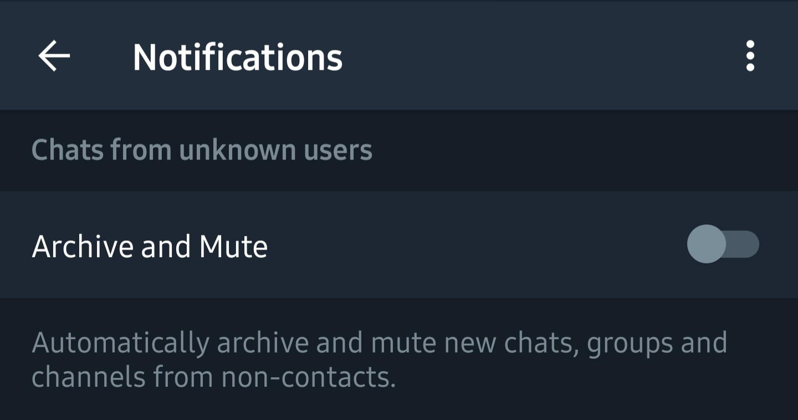
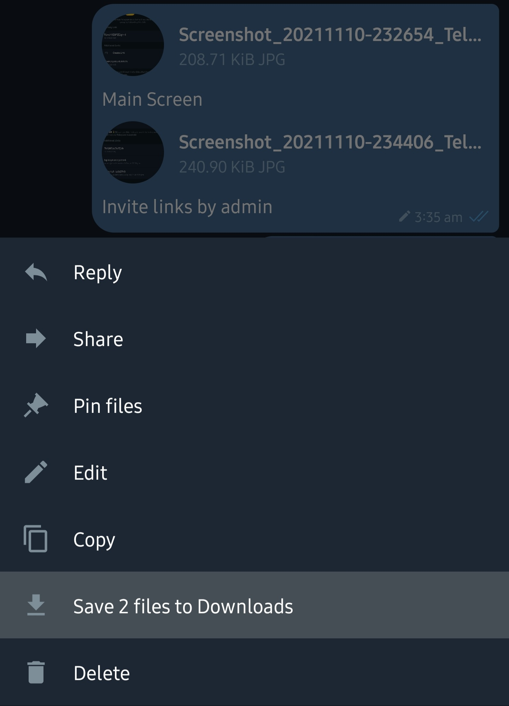
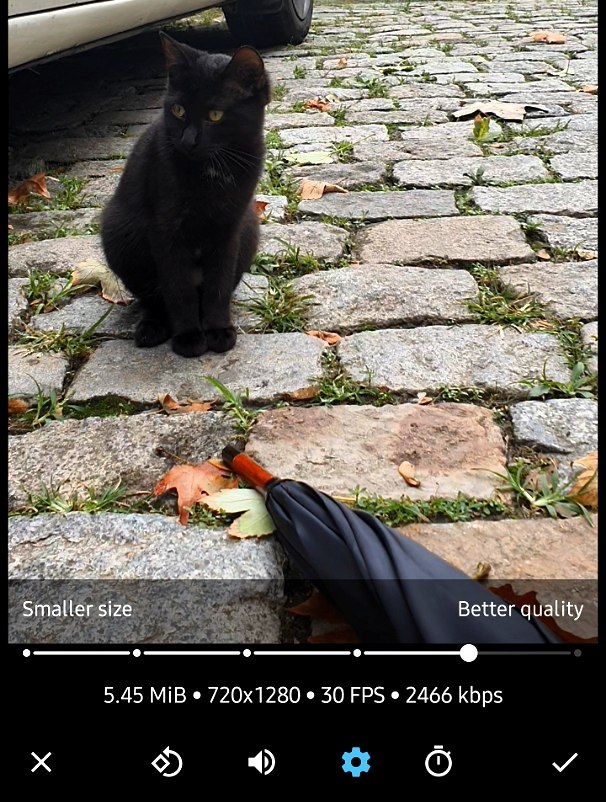
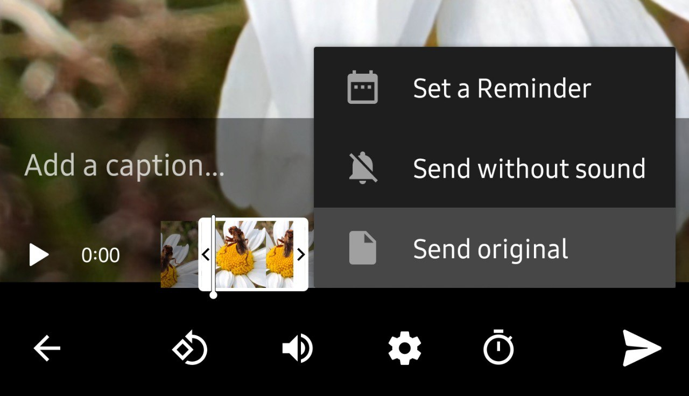
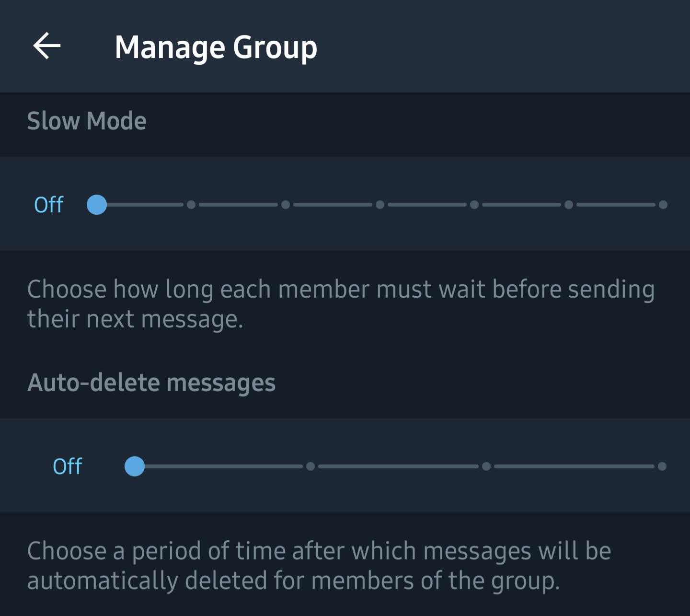
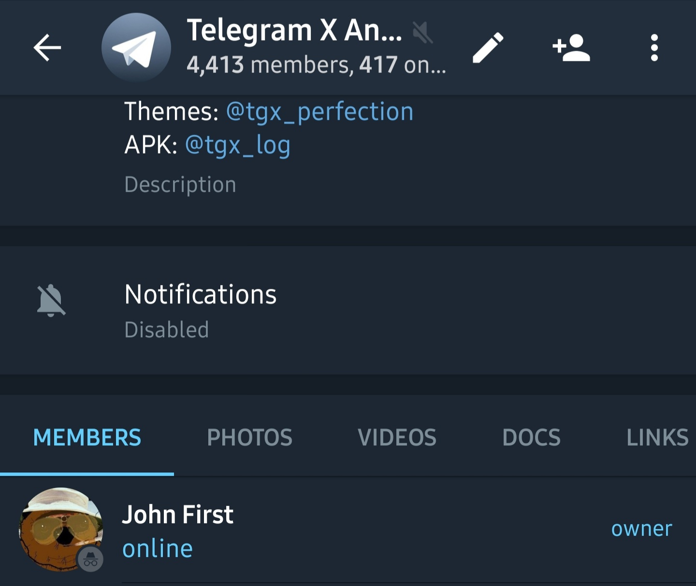
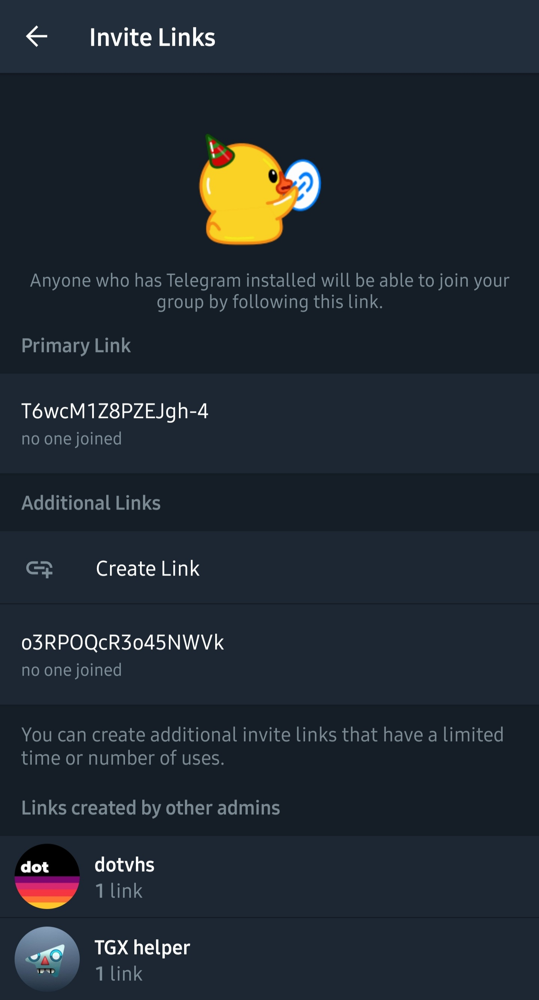
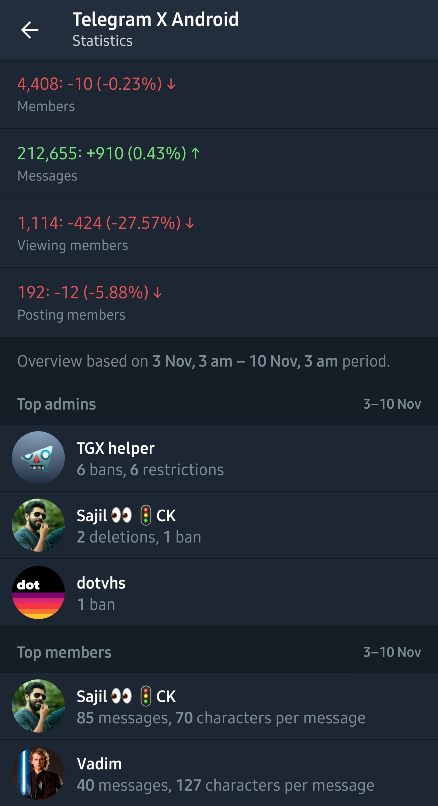

Brief overview of new features available on Telegram X for Android.
New Notification Settings
- Choose from which accounts you receive notifications: all, current or only selected ones
- Option to automatically Archive and Mute chats from unknown users

Chat Improvements
- New animated view, reply and share counters in channels
- Consistent look of number of views and shares in forwarded messages
- Reworked the way chats lists are loaded, which results in much faster loading and smoother scrolling
- Added in-app external link preview upon opening. Currently supported for YouTube, Vimeo, Twitch, Spotify, SlideShare, Sketchfab, SoundCloud, Apple Music and several more. Control in Settings — Interface — Preview external links.
- Preview private channels via invite link without a need in joining them
- Animated unread counters in the chats list
- Replies stack: when you follow up to the thread beginning by tapping on the replied message, tapping arrow button will take you back through each of them
- Holding arrow button now brings you to the very end of the chat, ignoring the unread messages and replies stack
- Added OpenMoji emoji pack
Multi-Pins in Chats
- Pin and unpin multiple messages at once
- Expand and scroll through the list of pinned messages
- Preview specific pinned message by holding
- See all pinned messages on a separate screen
- Now also available in private chats
Groups of Files and Audio Playlists
- Send up to 10 files or audios as a single message
- Caption changes in these messages are now animated
- In case any of it gets deleted, it's also animated
- Save entire albums and media groups in one click

Advanced Video Options
- Select video quality upon sending it

- Added option to trim videos
- Option to send in original quality by holding send button

Improved Instant View
- Much more links now have Instant View buttons
- Supported many new block types and references
- Channel link with member counter, when available
- Highlighting of links that lead to another Instant View
- Revised fonts and layout for a better look in general
- Improved viewing of
t.me/ivfor instant view template developers
Here's the demo, based on an article from the real world. If you are viewing this text from Telegram X, you may try out these features by yourself:
New Tools for Admins
- Set Slow Mode to limit number of messages per certain period
- Use Auto-Delete timer to self-destruct new messages

- Transfer ownership of groups, channels and bots
- Supported all new Recent Actions event types
- Added an ability to add admins without any rights to override some of Chat Permissions or just to set a custom title
Anonymous Admins
- Make admins anonymous whose identity you don't want to expose
- Anonymity indicator in the members list

- And quick toggle for it
- Set custom title for anonymous admins that's also visible in chats list
Invite Links 2.0
- Manage invite links on a new screen

- Create invite links with expiry period and limit of members who can join
- See other admins' invite links (when you have enough rights)
- See list of members who joined by a specific invite link
Statistics
- See recent posts activity in channel statistics
- View statistics for specific posts in channels
- Review statistics in big groups

Devices and QR Sign-In
- Quickly access and review active devices and sessions on settings screen
- Sign in on Telegram Desktop by scanning QR code
- Improved overall look of devices screen
- Warnings in menu and settings if you have incomplete login attempts
- Hold IP address or other information in the session's pop-up to copy it
- Added explanatory pop-ups when error occurs because current session is too recent
- Support for tg://settings and tg://settings/devices links
Blurred Backgrounds and Links
- Added new vector and gradient backgrounds, which you can find in Settings — Themes and Chats — Wallpapers
- Supported
t.me/bg/...links and its preview - Added option to blur wallpaper
And Much More
- Emoji 13.1 support: 😮💨, 😵💫, 😶🌫️, ❤️🔥, ❤️🩹, 🧔♀️, 🧔♂️ and many more
- Download and upload files up to 2GB
- Option to use system night mode
- Hold any person when typing "@" to create a custom mention
- New look of scheduled messages indicator in chats list
- Added Discuss button in channel message menu which brings to the specific
- Switch displaying data size unit between KB/MB/GB and KiB/MiB/GiB
- Option to add proxy via Scan QR
- Added Save to Music button in player's three-dot menu
- Delete call entry for other side from calls tab
- Send without sound in Secret Chats
- In-app website authorisations, example: contest.com, bugs.telegram.org
- Completely reworked internal link parser
- More hints when following invalid internal links
- If you have installed APK somewhere outside of Google Play, you will still receive notifications about new updates
- Added an ability to subscribe to beta from the app
- Notification error message on settings screen
- Action suggestions in Settings
- Send 🎰 for a random slot machine result
- Information tooltips when certain admin rights cannot be toggled
- Improved adding members, admins and banning them in small groups
- Vector outline of loading stickers
- Automatic build process status updates in @tgx_log channel
- Verify downloaded APK checksum for authenticity via @tgx_bot
- Dozens of other changes and improvements
Internal Changes
- Fully reworked build scripts
- All native libraries are now assembled by CMake
- Building and publishing process is now fully automated
- Upgraded
targetSdkVerisonto30 - Upgraded
compileSdkVersionto31 - Upgraded NDK to
22.1.7171670(r22) - Upgraded Gradle to
7.1.1 - Upgraded Android Gradle Plugin to
7.0.3 - Upgraded ExoPlayer to
2.16.0 - Upgraded Firebase Messaging to
22.0.0 - Updated TDLib, CameraX, ffmpeg and all other dependencies
- Migrated to 64-bit identifiers
- Work on reproducible builds
- Open-sourced some of the app components
- Added commit hash to the build
- Synced built-in strings with Translations Platform
Bugfixes
- Archive may not showed up after launch, even though there are archived chats
- Typing and other status animation in the chat list was getting stuck after using chat filter
- Non-latin anchors in Instant View did not work
- Admins on the View Admins screen could get duplicated
- Groups tab could have not showed up on user profile when opening it for the first time
- Protection against video compression crashes was missing
- In-App YouTube player did not work on Android 10+
switch_pm_parameterwas not passing to the bot properly when tapping onswitch_pm_textbutton- Group upgrade confirmation was not showing up when toggling specific admin permissions
nullinstead of the user name when reporting a message in a group- Profile photo upload date was missing for certain photos
- Rare case when certain photos could get duplicated in albums
- Map preview in inline results was missing
- In-app language editor was not working on certain Android versions
- Settings — Username — Share did not work properly
- "X subscribers" part in chat search results was affected and highlighted by current search query
- Incorrectly placed lock icon when having a secret chat with a verified account
- App now requests access to background location on Android 11+ which should result in a more stable broadcasting of Live Locations
- Sound feedback was duplicating when tapping live location bar in the chats list
- "Beginning" could have not worked in certain cases when searching messages by date
- Set as Current and Delete could have not worked for some old profile pictures
- Error tooltip could be incorrectly placed when tapping non-existent usernames and it took too long to load the server response
- telegra.ph and telegram.org links were opening in the browser in some cases when they should have opened in the Instant View
- Big view counters in polls could have overlapped the number of voters in bubble mode
- Members online status could become outdated on Members tab in some groups
- When deleting a chat from an archive, it will now bring to archived chats list instead of the main screen
- Dozens of other fixes not mentioned in this list
Fixed crashes
- Crash when trying to play specific .flac files
- Crash when trying to view certain animated stickers
- Crash when trying to get a link of certain proxies
- Crash when system notification channel cannot be updated
- Crash when trying to erase database from "Aw, Snap!" screen when only one account is signed in
- Crash when sending certain messages using Send without Markdown feature
- Crash when trying to play audio from inline search results
- Crash when trying to open certain videos with subtitles tracks in it
- Crash when trying to view certain events in Recent Actions
- Crash when trying to display a notification with a custom sound that was deleted
- Crash when scrolling poll voters
- Rare crash when tapping on certain hashtags
- Rare crash when new message arrives while viewing Unread chat filter
- Several crashes specific to Android 6.0 (Marshmallow)
Download on Google Play
http://play.google.com/store/apps/details?id=org.thunderdog.challegram
Subscribe to Beta
https://play.google.com/apps/testing/org.thunderdog.challegram
Change Logs
https://t.me/tgx_android — big announcements and stable change logs
https://t.me/tgx_log — beta change logs and automatic build status updates
https://t.me/tgx_bot — verify APK checksum for authenticity against modifications
Since you've read the entire change log up to this point, I may assume you might want to know a little bit more, or get a hint of what to expect next, like you do so from post-credit scenes in popular movies.
Bringing this update, including writing this change log and making the demos, required me to battle with a deep burnout and going through countless sleepless nights over again. This is the main reason why beta version has received over a hundred of updates, but it's been a long while since the stable one got one.
This year I've been coming up and experimenting with different ideas that might allow the app to survive even after I'm gone. Even though without burnout it would be much easier and faster, several required steps are finished and are mentioned in this change log. I hope you will be able to see them all before I really do so.
There's no big team behind creation of Telegram X. There is a wizard working on TDLib and many brave ones doing magic with Telegram servers on which it relies. But behind the app itself, since more than 6 years of its creation in April 2015, even though millions of people have used the app, more than 325,000 people subscribed to beta, and entire community with over 4,000 volunteer testers has grown around it, on another end there's always been just a couple chat admins who helped sorting out feedback and bug reports, and just one person resolving all of them, trying at the same time to bring joy through little details and animations to a few people who might notice them.
In spring 2020, when exactly 5 years have passed since the first development crunch that created the first version of the app, things stopped working the same way they used to. I didn't quit, and never stopped working. Moreover, whenever I tried to have a break or some rest, I couldn't relax at all, so I had to yet give up on this idea.
Even though I haven't recovered, in the end I've managed to create several things that allow improving the development process and ended up publishing this yet another stable release, including writing this change log.
Meanwhile, a couple months ago new young developer has joined this one-person team, and some of the features in this update are based on his pull requests. I hope one day this development process will become as public as possible, and it will bring everyone an opportunity to hop in and hop out of it anytime, without sacrificing healthy life and interrupting the process of creating new updates.
But it should be clear it's not an easy task to achieve in an instant: few things still have to be done before that, and properly building the team and managing such community isn't compatible with bringing new features, investigating and fixing issues, and writing the change logs by the same person at the same time (especially when it's the one out of life energy).
There's a big story behind each of the updates, and I apologise that this one took so long. While you may, as always, want to see more features, I hope you will find something new to enjoy in this update.
— V.